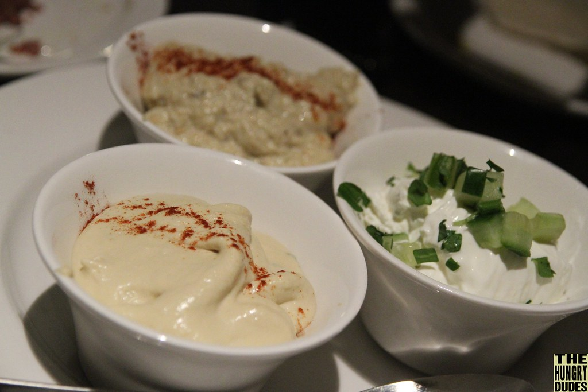

Home
Hummous

This is my personally perfected recipes, based originally on that of Yotam Ottolenghi but iterated over through many shortages of ingredients and time.
Ingredients
- 120g tahini
- Juice of 1 lemon
- 66ml water
- 1 can of chickpeas
- 1 tsp cumin powder
- Half tsp salt
Instructions
- Put the tahini and lemon juice in a bowl and mix together.
- Add the water and mix thoroughly until smooth.
- Add the can of chickpeas, cumin and salt and blend thoroughly with a hand blender until smooth.